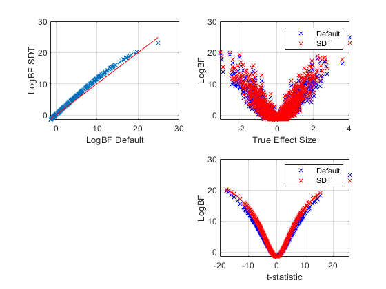

clear all
close all
K=1;
N=16;
glm.X=ones(N,K);
glm.c0=2;
glm.b0=0.5;
glm.B0=1*eye(K);
glm.w0=zeros(K,1);
R=1000;
lambda=spm_gamrnd(glm.c0,glm.b0,R,1);
iB0=inv(glm.B0);
for i=1:R,
C0 = iB0/lambda(i);
w(:,i) = spm_normrnd(glm.w0,C0,1);
d(i) = w(:,i)*sqrt(lambda(i));
y = glm.X*w(:,i)+sqrt(1/lambda(i))*randn(N,1);
[logbf(i),logbf_Default(i),t(i)] = bayes_glm_ttest1 (y);
end
figure
subplot(2,2,1);
plot(logbf_Default,logbf,'x');
xlabel('LogBF Default');
ylabel('LogBF SDT');
grid on
[tmp,ind]=sort(logbf_Default);
hold on
plot(tmp,tmp,'r-');
subplot(2,2,2);
plot(d,logbf_Default,'bx');
hold on
grid on
plot(d,logbf,'rx');
xlabel('True Effect Size');
ylabel('LogBF');
legend('Default','SDT');
subplot(2,2,4);
plot(t,logbf_Default,'bx');
hold on
grid on
plot(t,logbf,'rx');
xlabel('t-statistic');
ylabel('LogBF');
legend('Default','SDT');
